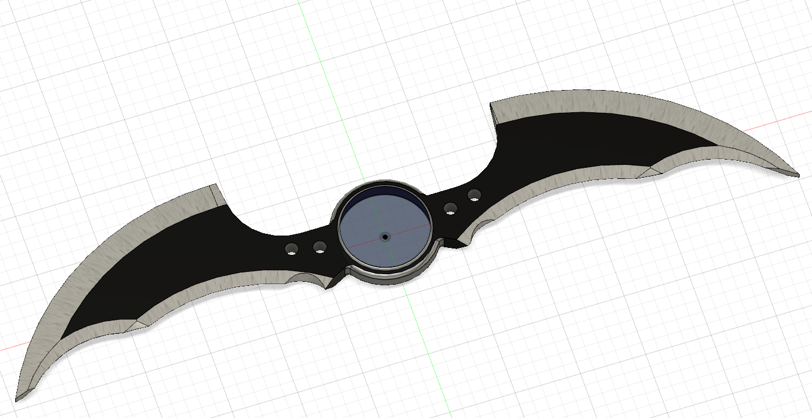
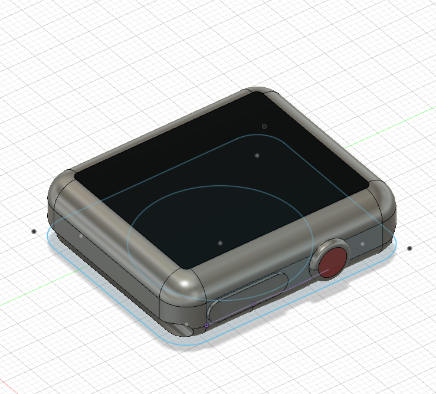

Here is an image of my 1st design in Fusion 360:
For the 1st design, I misread the objective, thinking we could construct anything in Fusion. I decided to make a batarang, inspired by the design from the Arkham video game series. I began my sktech by drawing a huge circle in the middle, and attaching the "wings" of the batarang using a mixture of curves and lines. Afterwards, I raised it into a 3D shape and added metallic texture to the surface. One of the hardest tasks was trying to make the ends of the wings equally sharp, with some curvatures being thin enoguh on one side, but not on the other; also, some points on the bottom aren't symmetrical. However, I was very pleased with my final model; then I realized it wasn't the objective asked for...
Here is an image of my official Fusion model:
I was scrambling to find a household object. Not necessarily out of not having ideas, more so having many items to choose from. My thoughts went from modelling the wire-cutter, to the multimeter, an even a lamp! Ultimately I settled on the apple watch as it was the best option for a short-amount of time. Sketching the design was easy, as all I had to do was make a rectangle with rounded corners. I extruded the object, filleted the top and bottom, and added the black screen. I wanted to make the screen with the glass texture, bu the outcome wasn't what I expected so I placed black oxide coating on the screen. Next, I created the side button by cutting an eliptical hole in the side of the watch, and inserted the exact-shaped button. later, I added the crown by creating a separate cylinder body and attaching it to the side. The final touches were adding the magnetic circle on the bottom and creating the hinges that the watch's bands connect to. To make the hinges I insered a whole that was the size of the watches width and positioned it so that a small portion of the watch would be cut out.
Here is a column with an mp4 video.